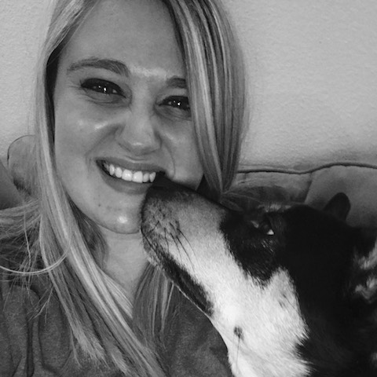

About Us
We are an Austin-based company who specializes in dog and cat walking/sitting. We have a passion for animals and we will be there to take care of your special friend. We do business all over Austin but our focus is on the Northwest side.
Kathryn Wiles Elsass - Owner/Operater, Cat Enthusiast and Dog Walker Extraordinaire
Prior to founding Texas Tails ATX, I worked in marketing and public health in the NYC Metro area for nearly 10 years. Despite my experience and education, an MPH in Health Education and Behavioral Sciences, I was no longer interested in corporate America
and all that entailed.
I have always been asking myself what I love to do, and what my passion is. I have many, but what could I translate into a rewarding career that helps people...AND ANIMALS? Now I aim to provide the most personalized
and professional pet sitting and dog walking service that people can rely and depend on.
I have worked as a vet receptionist at The Central Texas Cat Hospital in Round Rock and as a Kennel Tech at Austin Pets Alive! I have fostered over 40 cats for APA! And currently live with my 3 black kitties named
Charlie, Ellemenopee, and Vader. My other two favorite animals are my husband, Casey, and our Great Dane Muppet ;)
Casey - CFO/Master of Dogging
Casey has grown up with dogs his whole life, specifically Great Danes. The current love of his life is his Dane Muppet, who he even got tattooed on his leg! Casey loves all dogs and has a natural way with making them comfortable and relaxed in all situations. When he is not playing with Mupps or walking your pups he is a musician and works in sales at Autonation selling cars. Casey grew up with cats, dogs, birds, sugar gliders and fish. Caring for your pets is a top priority, and he is glad to be there for them while you’re away.
Jen Kopp - The “Pawtographer”
Hi! I have been passionate about helping and caring for people and animals for as long as I can remember. It is incredibly exciting to have a job doing what you love!
I was born in Southern California and relocated
here with my family before I started high school. I graduated from the University of Texas in Austin, where I have resided for the past 20 years. I have had many jobs, including band management, service industry, and “the office
job” at an insurance brokerage. For the past 3 years, I was the General Manager for a restaurant in town. These experiences have all taught me so many things, including how much people, including myself, love, care for, and
miss their animals while they are away. It is an amazing thing to be able to go care for and play with these animals and give their loving owners peace of mind. I love to help teach dogs and their owners how to do tricks, too!
Photography is another of my passions, so I hope you enjoy the photos that I send you! =)

Micayla Flores
I live in Northwest Austin with my Husband and two pups that we love very much! I have always loved animals and have been looking for a way to do what I absolutely love! I went to college in San Antonio and afterwards move here into an apartment with my husband.
My two pups are fun and loving. Willow and Koda are our lives and there is plenty of love to share. Koda is 3 months old and I have adopted her from APA and plan to volunteer in the future for APA. I am excited to get started loving your animals almost as much as you do!
Our Happy Clients
Our Services

Dog Walking
Includes: Potty Break, Walk, Refresh Water, Treats and Pets/Love & Attention
15 Minutes = $15
30 Minutes = $20
+
Longer walk & feeding if needed
45 Minutes = $25
+
Collecting mail & taking in/out trash bins
60 Minutes = $32
+
Extended walk and playtime & Brushing if desired

Cat/Dog Sitting
Includes: Love and Affection, Potty Break/Scooping Litter, Feeding, Cleaning Up Pet Area, Changing Water
15 minutes = $15
30 minutes = $25
+
Brushing if desired, Collecting Mail, Changing Lights/Blinds
45 minutes = $30
+
Watering Plants, Refill Bird Feeder
Overnight Typically 7pm-9am but can be discussed = $65
+
Keeping your pet's routine as normal as possible. (ie: if the dog sleeps with you, he will sleep with us, if he is in the crate, he will sleep in the crate.) Our goal is to keep the pet's routine as normal as possible to make them comfortable.
Add ons: Some pets have special needs and we are trained in giving shots, Sub-Q fluids and medications. Prices may vary depending on the situation but typically rates are: $5 per administration of Sub-Q fluids $3 per injection (insulin) $2 per administration of oral medication
Pet Taxi
Need someone to take your companian to the vet or anywhere specific? We can accomodate.
10 miles $15
20 miles $25

Catercise
This is a new project that I am testing out specifically tailored for Texas Tails ATX. I know so many overweight indoor cats that need a little extra push to get the exercise they need! I will use lasers, wands, and treats to run them up and down the stairs and around the apartment/house for a minimum of 10 minutes for an extra $5. I will also send you a video to show them in action! If your cat is completely uninterested I will not charge the fee but it can't hurt to give it a try!

Pawtraits
Jen is our affiliated pet photographer that is undergoing extensive training. Her rates are variable but start at $100 per session and include indoor and outdoor photos in multiple locations and yes, their humans are invited to partake as well. Please inquire for current rates and for her direct contact information.
* All prices include up to 2 dogs in the same household, $2 extra charge for additional dogs *
Key pick up or drop off: Initial key pick up and drop off is free. Additional special trips to pick up or drop off keys may incur a $5 charge.
Please book for the holidays as early as possible. We book holiday visits on a first-come, first-serve basis. Holiday visits incur an additional $10 fee.
Holidays are: New Year’s Eve, New Year’s Day, Easter, Memorial Day, Independence Day, Labor Day, Thanksgiving, Christmas Eve and Christmas Day.
We accept Visa, MasterCard, American Express, Discover, Venmo, Square, PayPal, Checks or Cash.